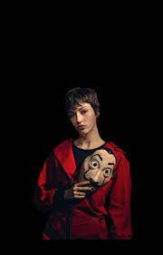
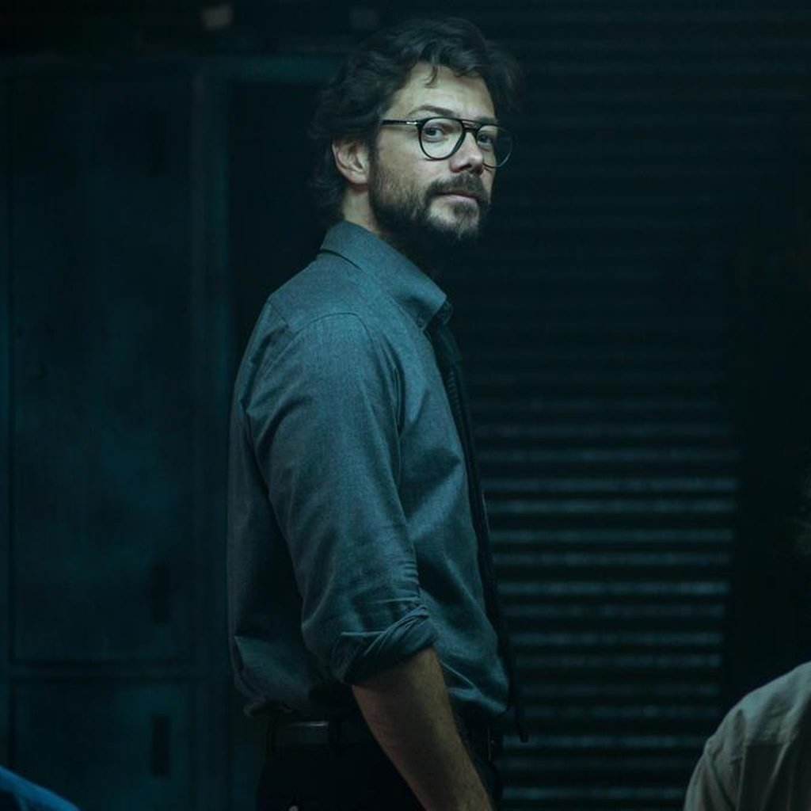
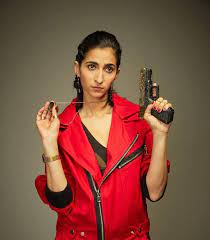
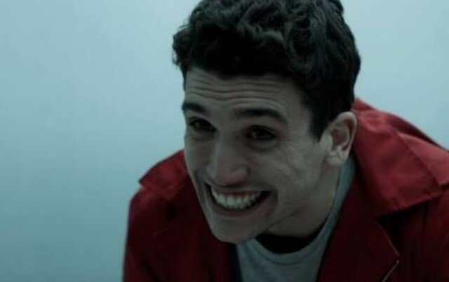
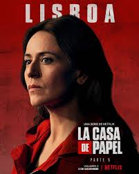
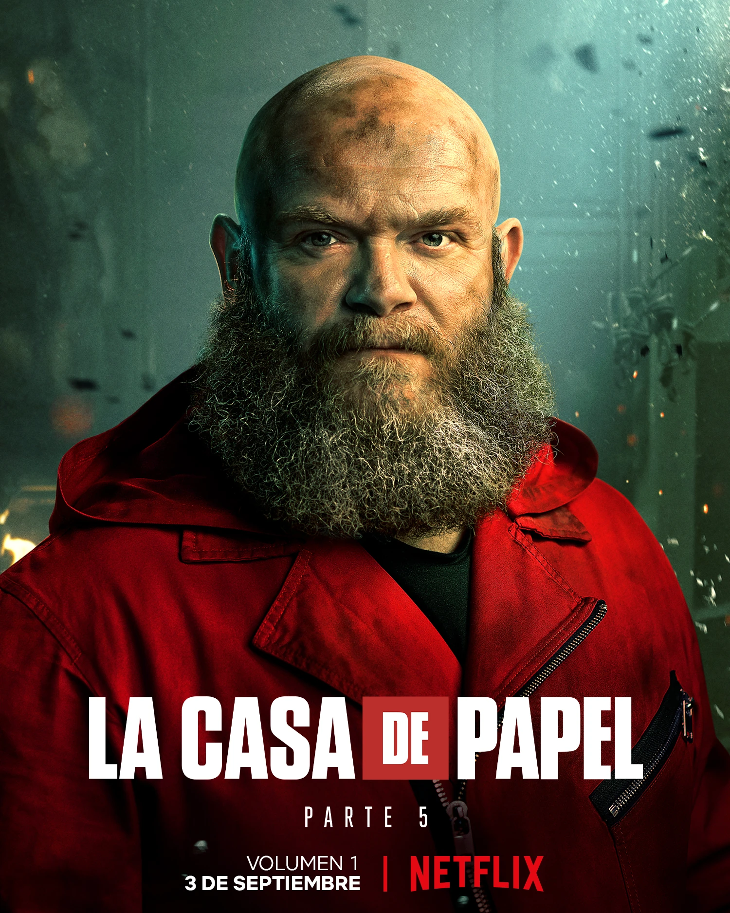
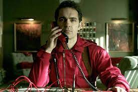
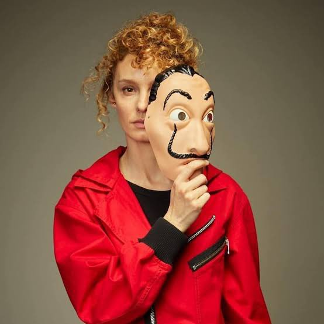
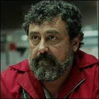
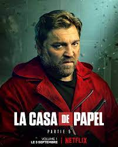

Oito ladrões fazem reféns e fecham-se dentro da Casa Nacional da Moeda de Espanha, enquanto um génio do crime manipula a polícia para executar o seu plano. Veja tudo o que quiser. Esta série venceu o prémio de Melhor Drama em três certames: International Emmy Awards, Prémios Fénix e Prémios Iris.
| Personagem | Ator/Atriz | Descrição | Imagem |
| Tóquio | Úrsula Corberó | óquio é uma narradora pouco confiável e uma assaltante em fuga vigiada pelo Professor |  |
| Professor | Álvaro Morte | O Professor é o mestre dos assaltos à Casa da Moeda e ao Banco da Espanha e o irmão de Berlim | ] |
| Nairóbi | Alba Flores | Ela é a gerente de qualidade do grupo, encarregada de imprimir dinheiro na Casa da Moeda Real da Espanha | ] |
| Rio | Miguel Herrán | Rio, um rapaz hacker que sabe tudo sobre programação e pirataria. | |
| Denver | Jaime Lorente | Denver, o impulsivo filho de Moscou. Seu verdadeiro nome é Ricardo Ramos e foi escalado para o assalto à Casa da Moeda a pedido do seu pai, que queria tirá-lo das ruas. |  |
| Raquel(lisboa) | Itziar Ituño | Ela era a inspetora do Corpo de Polícia Nacional encarregada da investigação do assalto à Casa da Moeda, mas foi afastada do caso por seu envolvimento com o Professor. |  |
| helsink | Darko Peric | Helsinki,sérvio que entrou para o grupo pela força bruta e experiência em batalha. Seu verdadeiro nome é Yashin Dasáyev, sendo primo de Radko Dragic, o Oslo. |  | Arturo Róman | Enrique Arce | Arturo Román, o diretor da Casa da Moeda, além de chefe e amante de Mónica Gaztambide. Depois de rejeitar a secretária por ser um homem de família, Arturo se mostra ainda mais detestável ao longo do assalto. | |
| Berlim | Pedro Alonso | Berlim é o comandante responsável pela operação na Casa da Moeda |  |
| Estocolmo | Esther Acebo | Estocolmo, uma mulher que se tornou com muito custo secretária de Arturo Román, o Diretor da Casa da Moeda. O problema é que ela se envolve com seu chefe, casado e com filhos, e descobre que está grávida dele pouco antes do local de trabalho ser invadido pelos sequestradores. |  |
| Moscou | Paco Tous | Moscou, um mineiro que foi afastado da profissão por conta da asma, começou a trabalhar como serralheiro, mas se encontrou mesmo no mundo do crime, sendo condenado pelo roubo de várias joalherias. |  |
| Bogota | Hovik Keuchkerian | Bogota,o experiente metalúrgico que participa do assalto ao Banco Central da Espanha. |  |